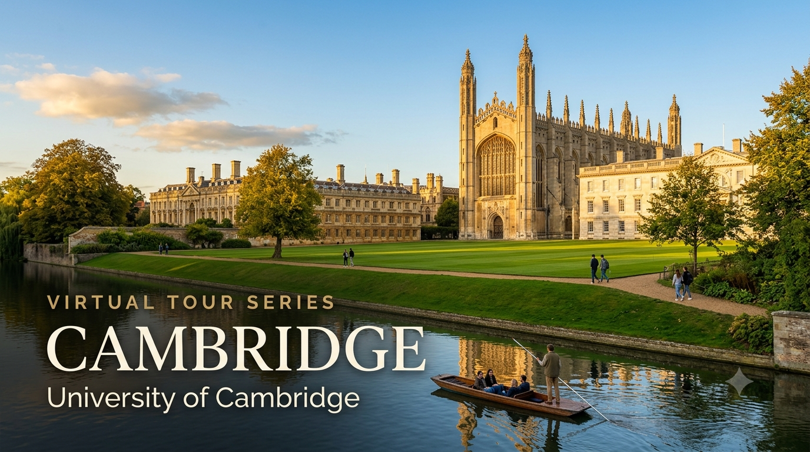

University Spotlight: Cambridge — Virtual Tour Guide

I'm delighted to share the sixth edition of the University Virtual Tour Series — a curated resource to help your child explore some of the world's leading universities from the comfort of home. The University of Cambridge is one of the world's two oldest English-speaking universities and one of the most academically intensive in existence. Students from both the CBSE and Cambridge programmes will find this resource relevant — Cambridge accepts both qualifications, though A Levels are more naturally aligned to its programme structure.
I strongly recommend that parents of Grade 9 and above students make the time to visit at least one university — Cambridge, a local university in India, or any institution of your choice. A physical visit gives your child something no virtual tour can replicate: they will see the infrastructure and facilities with their own eyes, observe how professors engage with students in live classrooms, and most importantly, spend time talking to existing students about their day-to-day experience. For Cambridge specifically, the Collegiate system and the supervision-based teaching can only be truly understood when you walk the courts, sit in a dining hall, or see a supervision room — one-on-one between student and supervisor — for yourself. If you'd like guidance planning a visit, feel free to get in touch.
Cambridge Admission Requirements — CBSE and Cambridge A Level
The table below summarises what Cambridge officially requires for students applying through each pathway. Cambridge's admissions process is among the most academically rigorous in the world — for most subjects, grades alone are insufficient; admissions tests and interviews are critical. Reach out for subject-specific strategy and targeted preparation.
| Requirement | CBSE Grade 12 | Cambridge A Level |
|---|---|---|
| Qualification | Indian Standard 12 — CBSE Board; recognised by Cambridge but typically requires additional qualifications such as SAT or Advanced Placement (AP) to demonstrate depth | Cambridge International A Level — 3 or 4 subjects; most competitive; Cambridge's own exam system naturally aligned to programme entry |
| Typical Academic Offer | 90%+ aggregate overall; 90–95%+ in relevant subjects; typically requires SAT 1500+ or strong AP scores (4–5) in relevant subjects in addition to CBSE marks | A*A*A to A*AA depending on course; Mathematics and Natural Sciences typically require A*A*A; most subjects require A* in at least one subject |
| English Proficiency — IELTS | IELTS 7.5 overall, minimum 7.0 per component (Cambridge has one of the highest English requirements in the UK) | Waived for Cambridge A Level students who studied in English at an English-medium school |
| Application Portal | UCAS — deadline 15 October (same early deadline as Oxford) | UCAS — same deadline |
| Cambridge Online Preliminary Application (COPA) | Additional questionnaire submitted via Cambridge Apply — due 15 October with UCAS; subject-specific questions; some colleges require a written work sample | Same — COPA is required for all Cambridge applicants regardless of qualification |
| Personal Statement | 4,000 characters via UCAS — must be entirely about academic interest in the chosen subject; personal or extracurricular content is unwelcome | Same character limit; Cambridge tutors are explicit: they want subject passion, not a personal statement about you |
| Admissions Tests | Engineering: ENGAA; Computer Science: TMUA; Mathematics: STEP II and III (post-offer); Natural Sciences: NSAA; Law: LNAT; Medicine: UCAT + BMAT or UCAT (Cambridge moved to UCAT from 2024) | Same — all applicants take the same tests |
| Interview | Shortlisted candidates interview in December — two subject-specific interviews with two different supervisors; conducted online for international students; 30–40 minutes each; involves unseen problems | Same — the Cambridge interview is a mini-supervision; prepare for unexpected academic problems, not personal questions |
| College Choice | Choose a College or make an open application; Cambridge's system allocates unselected open applicants to undersubscribed Colleges | Same |
UCAS rule: Students cannot apply to both Oxford and Cambridge in the same application cycle — you must choose one. Supervision vs Tutorial: Cambridge calls its one-on-one teaching "supervisions"; Oxford calls them "tutorials" — they serve the same function but at Cambridge, supervisions are more closely tied to the exam structure. STEM emphasis: Cambridge has traditionally been stronger in Mathematics, Natural Sciences, and Engineering; Oxford in Law, PPE (Philosophy, Politics & Economics), and Medicine. Town: Cambridge is a smaller city than Oxford — quieter, greener, and more contained. STEP: For Mathematics at Cambridge, students must typically pass STEP II and III exams (taken post-offer in Year 13) — these are among the most challenging undergraduate entrance exams in the world.
Voices from Cambridge — Indian Students and Alumni
"Cambridge taught me to love precision. Whether it was a mathematical proof or an argument in supervision, you were expected to be exact. That habit of mind has stayed with me through everything."
— Venkataraman Ramakrishnan, India, PhD Chemistry (Ohio) | Cambridge MRC Laboratory of Molecular Biology | Nobel Prize in Chemistry 2009
"The collegiate system at Cambridge means you are never a face in a crowd. From my first week, I had a network of people who were engaged with what I was studying and genuinely interested in how I was progressing."
— Priya Lal, India, History, King's College, Cambridge | Assistant Professor, History, Boston University
Why Should Your Child Consider Cambridge?
1. QS #6 Globally, THE Joint #3 — Consistently in the Top 5 Worldwide
Cambridge holds #6 globally in QS 2027 and joint #3 in THE 2025, making it one of only four or five institutions in the world that simultaneously ranks in the top 10 of every major international ranking system. For Indian students seeking the strongest possible academic credential in STEM disciplines — particularly Mathematics, Natural Sciences, Engineering, and Computer Science — Cambridge is among the top two or three destinations globally. Cambridge's Mathematics department is widely considered among the best in the world, and its Natural Sciences tripos is among the most demanding undergraduate science programmes available anywhere.
2. The Supervision System — The Gold Standard of Academic Teaching
Cambridge's defining pedagogical feature is the supervision: every Cambridge undergraduate meets one-on-one or in pairs with a subject expert every week. The supervisor is typically a PhD student, postdoc, or faculty member who goes through the student's work in detail, poses new problems, and challenges their thinking in real time. This means every Cambridge student — regardless of year — receives a level of personalised academic instruction that no large lecture-based university can match. For students who are genuinely excited by their subject and ready to work at intensity, the supervision system is the most powerful undergraduate academic environment in the UK.
3. The Collegiate System — Belonging to Something Intimate Within Something Vast
Cambridge's 31 Colleges are independent institutions within the University. Each College has its own library, dining hall, sports facilities, chapels, and community of students and Fellows. When a student is admitted to Cambridge, they are admitted to a specific College — and that College becomes their home for their entire undergraduate career. The result is a combination of global university prestige and a close-knit community of perhaps 400–700 undergraduate students — intimate and vast at the same time. For Indian students far from home, the College is a genuine community of support and belonging from day one.
4. Research and Nobel Legacy — 121 Nobel Laureates
Cambridge alumni and faculty have received 121 Nobel Prizes — the most of any university in the world. The list of Cambridge discoveries that changed civilisation includes DNA structure (Watson & Crick), the neutron (Chadwick), the electron (Thomson), the structure of insulin (Sanger, twice Nobel laureate), gravitational waves (collaborative), and discoveries across Mathematics, Economics, Literature, and Peace. For students who want to learn from people actively at the frontier of human knowledge, Cambridge provides access to a research environment that has no peer.
What Parents Should Know
- Annual tuition fee for international students: approximately GBP 37,527–63,375 (~INR 40–68 lakhs at ~GBP 107/INR, June 2026) — Medicine and Veterinary Science are at the highest end
- Living costs in Cambridge: approximately GBP 10,000–12,000/year (~INR 11–13 lakhs); College accommodation is guaranteed for all first-year students and typically available throughout the degree
- UCAS deadline is 15 October — the same as Oxford; preparation must begin in Grade 11
- CBSE students are typically required to demonstrate additional academic depth through SAT or AP scores; Cambridge's website specifies this clearly under the India country page
- STEP examinations for Mathematics are post-offer, pre-enrolment; they are graded 1–3 and are among the hardest undergraduate entry tests in the world — only ~30% of students with conditional Cambridge offers in Maths pass STEP at the required level without preparation
- Cambridge has a vibrant Indian Society and South Asian communities spanning cultural events, academic networks, and alumni connections — Cambridge India Day and Diwali celebrations are large annual events
- The Cambridge Commonwealth, European and International Trust (CCEIT) offers financial support to students from Commonwealth countries including India — apply separately after receiving an offer
To discuss Cambridge admission strategy, UCAS personal statement planning, COPA application, admissions test preparation (STEP, ENGAA, TMUA, NSAA, UCAT), College selection, interview preparation, and scholarship opportunities for your child, feel free to write to me at pcmadankumar@gmail.com or get in touch via the contact page. I'm happy to set up a one-on-one session at a time convenient for you.
I curate University Virtual Tour resources as part of my commitment to helping students and parents make informed post-secondary decisions. Future editions will continue to spotlight leading universities across major study destinations worldwide, including the UK, USA, Australia, Canada, India, and Singapore.
Best wishes,
Madan Kumar PC
References
- QS World University Rankings 2027 — Cambridge #6 globally (released 18 June 2026). topuniversities.com
- Times Higher Education World University Rankings 2025 — Cambridge joint #3. timeshighereducation.com
- University of Cambridge — Undergraduate Study: International Students. undergraduate.study.cam.ac.uk
- Cambridge — International Qualifications: India. undergraduate.study.cam.ac.uk
- Cambridge — English Language Requirements. undergraduate.study.cam.ac.uk
- Cambridge — Admissions Assessments. undergraduate.study.cam.ac.uk
- Cambridge — Fees and Costs 2026–2027. undergraduate.study.cam.ac.uk
- Cambridge Commonwealth, European and International Trust. cambridgetrust.org
- University of Cambridge Campus Tour — YouTube. youtube.com